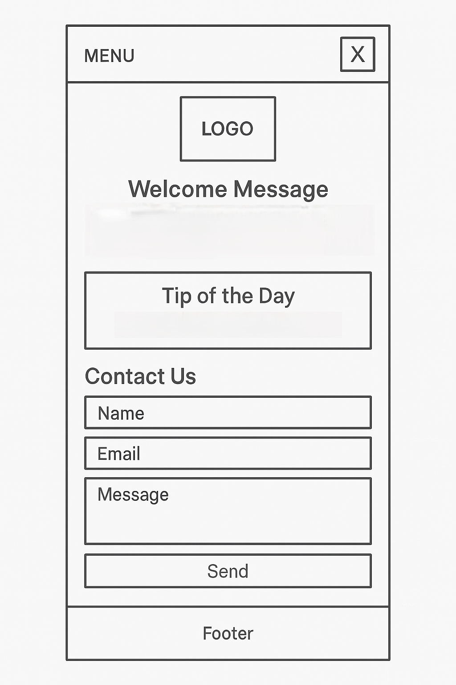
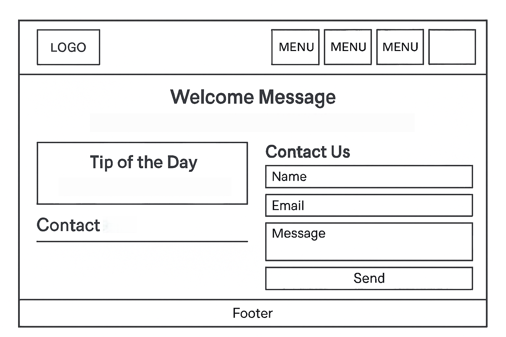

Site Name
Name: Lucban Green Initiative
Description: A local environmental awareness campaign promoting waste reduction, tree planting, and sustainable living in Lucban, Quezon. The name reflects the town’s identity and commitment to environmental care.
Optional Domain: lucbangreen.org
Site Purpose
The website aims to inform, engage, and inspire Lucban residents to take part in environmental initiatives. It will serve as a hub for event sign-ups, educational materials, and updates on ongoing community projects like clean-up drives, tree planting, and anti-plastic campaigns.
Scenarios
- “How can I sign up for the next community clean-up drive?”
- “Where can I download the LGU’s waste segregation guide?”
Color Schema
Main colors selected for the site:
- #2E7D32 – Used for headings, buttons, and key accents.
- #F4F1DE – Used for page background.
- #FFD166 – Used for highlights and call-to-action buttons.
Typography
Heading Font: Poppins – Used for all titles and section headers.
Body Font: Open Sans – Used for paragraphs and informational text.
Sample Heading in Poppins
Sample body text in Open Sans.
Wireframes
Basic layout sketches for mobile and desktop views.
Mobile View:
Desktop View:
